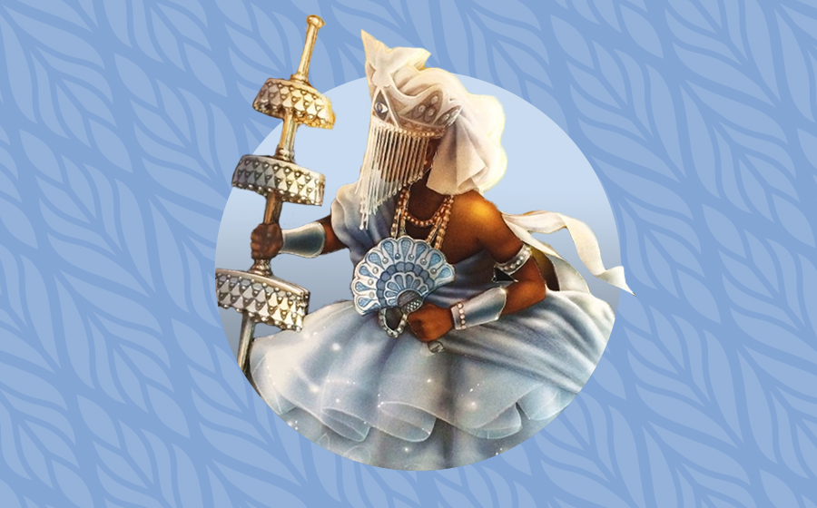
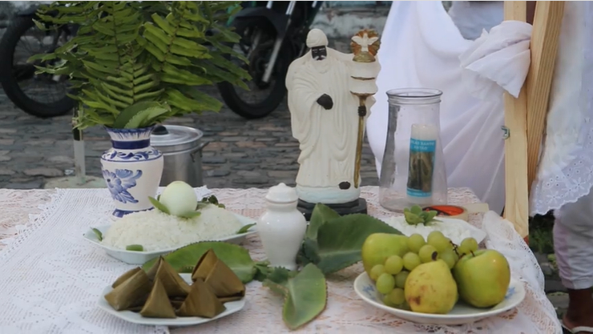

ORIXÁ DA SABEDORIA
Sabedoria, Humildade e Paz interior.
" Oxalá é quem sustenta a vida com calma de quem conhece o tempo e a eternidade. "
Quem é Oxalá?

Oxalá é um dos orixás mais respeitados dentro das religiões de matriz africana sendo considerado o orixá mais antigo e
experimente especialmente no Candomblé e em diversas vertentes da Umbanda. Associado à criação da humanidade, à ancestralidade, ao
equilíbrio espiritual e à sabedoria, Oxalá ocupa uma posição central dentro dos fundamentos afro-brasileiros.
Dentro das tradições africanas, os orixás não são apenas figuras religiosas ou personagens simbólicos. Eles representam
forças da natureza, princípios ancestrais, energias da existência e caminhos espirituais que se manifestam na vida humana.
Cada orixá possui fundamentos, elementos, qualidades, histórias sagradas e formas próprias de atuação.Oxalá é frequentemente
associado à calma, à paciência, ao silêncio ritual, à responsabilidade espiritual e à sabedoria adquirida através do tempo.
Porém, reduzir Oxalá apenas à ideia de “paz” é simplificar demais sua profundidade dentro das tradições afro Oxalá também
representa disciplina espiritual, firmeza, ancestralidade e poder criador e além de tudo,a humildade dentro do coração de seus
filhos. A cor branca é um dos símbolos mais conhecidos ligados a Oxalá. Dentro dos fundamentos afro-religiosos, o branco não
significa apenas “pureza”, mas está ligado ao equilíbrio, ao respeito ao sagrado, ao silêncio, à ancestralidade e à organização
espiritual. Em muitas casas, vestir branco é uma demonstração de respeito às energias ligadas a Oxalá, vestir branco é honrar o
sagrado.As tradições afro-brasileiras possuem enorme diversidade. Por isso, os fundamentos ligados a Oxalá podem variar conforme
a nação, a raiz religiosa e os ensinamentos de cada terreiro. Não existe uma única forma universal de cultuar os orixás, já que
grande parte desses conhecimentos é preservada oralmente através das gerações. Porém,acender uma vela a oxalá ou cantar,e rezar
em seu nome é uma demonstração universal de respeito independe da vertente,oxalá não abandona e ignora os filhos.
Dentro do Candomblé, duas qualidades muito conhecidas de Oxalá são Oxaguiã e Oxalufã. Oxaguiã representa juventude,
movimento, inteligência e força transformadora. Já Oxalufã está ligado à ancestralidade, à velhice sagrada, à paciência e à
sabedoria profunda adquirida através da experiência.
Elementos ligados a Oxalá;

Os elementos ligados a Oxalá possuem significados espirituais e ancestrais profundos dentro das religiões de matriz africana.
Porém, seus fundamentos podem variar conforme cada tradição religiosa. A cor branca é um dos principais símbolos de Oxalá. Ela
representa equilíbrio espiritual, serenidade, ancestralidade, silêncio e respeito ao sagrado. As roupas brancas usadas em obrigações
e rituais possuem grande importância dentro dos cultos afro-brasileiros,como dito anteriormente.O opaxorô, bastão tradicionalmente
associado a Oxalufã, representa autoridade espiritual, ancestralidade e sabedoria. É um dos símbolos mais conhecidos ligados ao orixá.
O algodão também aparece em fundamentos de Oxalá, simbolizando suavidade, calma e cuidado espiritual e na umbanda,a folha do algodão é
bastante utilizada também. Temos o efun, pó branco sagrado utilizado em rituais de candomblé, possui ligação com a ancestralidade e
com forças criadoras também conhecido pela sua força equilibradora.
Entre os alimentos, o inhame possui forte relação principalmente com Oxaguiã. Dentro das tradições afro, os alimentos carregam
axé, energia espiritual e significados sagrados. O inhame representa força, sustentação e resistência. O igbin, conhecido como
caracol africano, também aparece em diversos fundamentos ligados a Oxalá. Ele simboliza paciência, lentidão sábia, silêncio e
ancestralidade. O animal que representa a calmaria. água possui grande importância nos fundamentos de Oxalá por representar vida,
criação, purificação e equilíbrio. O silêncio ritual também é considerado um elemento importante em muitos cultos ligados ao orixá.
Entre as ervas tradicionalmente associadas a Oxalá em diversas tradições estão boldo, folha-da-costa e tapete-de-oxalá, utilizadas
em banhos, amacis e rituais específicos. Porém, o uso correto dessas ervas depende dos fundamentos e orientações religiosas adequadas.
Qual o significado espiritual de ser filho de Oxalá?

Dentro das religiões de matriz africana, acredita-se que cada pessoa possui ligação com determinados orixás através de sua
ancestralidade, caminho espiritual e necessidades da própria vida. Ser filho de Oxalá não significa apenas possuir características
parecidas com o orixá, mas também necessitar daquela energia espiritual para o próprio desenvolvimento. Muitas vezes, o orixá rege
justamente aquilo que a pessoa mais precisa aprender, equilibrar ou curar espiritualmente ao longo da vida. Dentro das tradições
afro-brasileiras, entende-se que o orixá atua diretamente na construção espiritual do indivíduo.
Por exemplo, pessoas ligadas a Oxalá frequentemente precisam desenvolver paciência, equilíbrio emocional, responsabilidade
espiritual, calma e maturidade. Em muitos casos, são pessoas que vieram aprender sobre serenidade, disciplina e sabedoria diante das
dificuldades da vida.
Isso não funciona como uma regra absoluta, mas faz parte de entendimentos espirituais presentes dentro de diversas casas e
tradições afro-brasileiras.Por isso, dentro do Candomblé e de outras tradições afro, o orixá não é visto apenas como uma
“personalidade espiritual”, mas como uma força ancestral que auxilia no equilíbrio da vida da pessoa.
Muitas tradições descrevem filhos de Oxalá como pessoas observadoras, responsáveis, calmas e que costumam carregar grande
sensibilidade espiritual. Porém, isso não deve ser tratado como regra fixa, já que cada indivíduo possui sua própria
personalidade e trajetória.
Ser filho de Oxalá também envolve responsabilidade espiritual. Em muitas casas, existe forte cobrança sobre comportamento,
respeito aos mais velhos, cuidado com a palavra e equilíbrio emocional, justamente por serem fundamentos ligados ao orixá.
Itãs: Histórias Mitolôgicas de Oxalá;

Os itãs são histórias sagradas transmitidas oralmente pelas tradições africanas e afro-brasileiras. Mais do que “lendas”,
eles funcionam como ensinamentos espirituais, filosóficos e morais preservados através das gerações.Um dos itãs mais conhecidos
sobre Oxalá conta sua viagem ao reino de Xangô. Antes de iniciar sua jornada, Oxalá recebeu orientações espirituais importantes,
incluindo não consumir bebida alcoólica durante o caminho. Porém, ao longo da viagem, acabou desrespeitando essa recomendação.
Durante sua caminhada, Oxalá enfrentou humilhações, dificuldades e chegou a ser injustamente preso. Apenas depois de muito
sofrimento sua inocência foi reconhecida, passando então a receber ainda mais honra e respeito.
Esse itã carrega diversos ensinamentos dentro das tradições afro-brasileiras. Ele fala sobre paciência, humildade,
responsabilidade espiritual, respeito aos fundamentos religiosos e aprendizado através das dificuldades.
Os itãs possuem enorme importância dentro das religiões de matriz africana porque preservam conhecimentos ancestrais através
da oralidade. Durante séculos, muitos desses ensinamentos sobreviveram mesmo diante da escravidão, do racismo e da perseguição
religiosa sofrida pelas populações negras no Brasil.